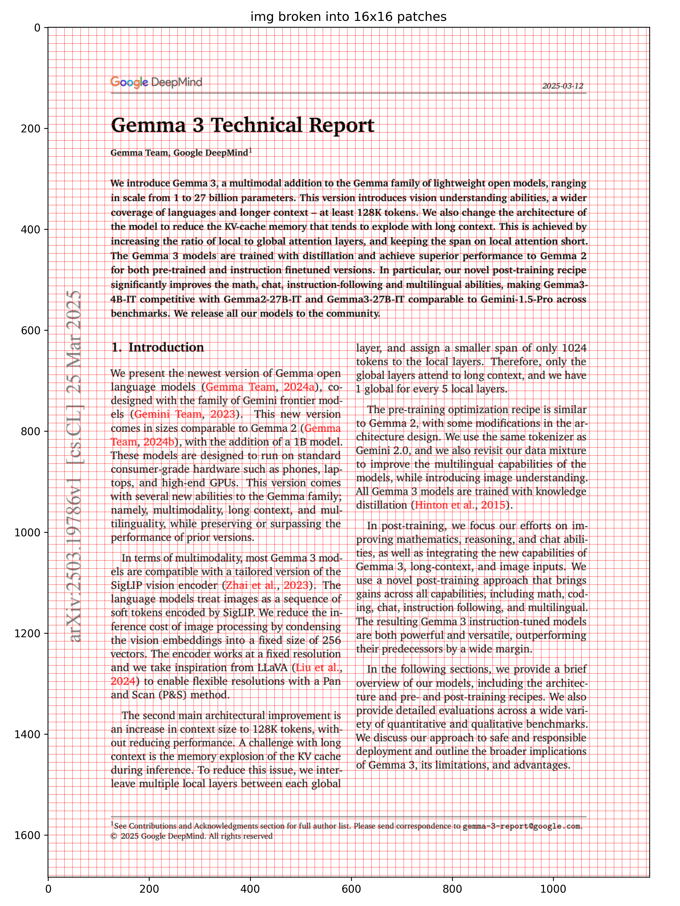
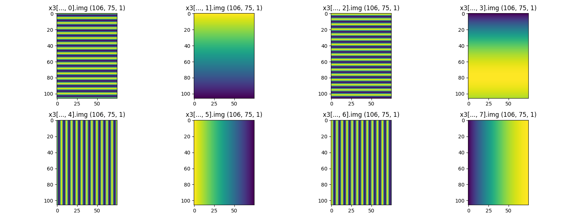

1 Embeddings
import jax.numpy as jnp
from flax import nnx
from jax import Array
from neu_ai.plot import plot1, plot_img_patches
from neu_ai.utils import read_pdf
class PatchEmbed(nnx.Module):
def __init__(s, patch_size, d_embed, rngs, n_channel=3):
s.conv = nnx.Conv(
in_features=n_channel,
out_features=d_embed,
kernel_size=(patch_size, patch_size),
strides=(patch_size, patch_size),
rngs=rngs,
)
def __call__(s, x):
# x: (batch, height, width, n_channel)
return s.conv(x)
def mid_split(x: Array):
mid = x.shape[-1] // 2
return x[..., :mid], x[..., mid:]
class RoPE1D(nnx.Module):
def __init__(s, d, T, base=1e4):
wt = s.wt(T, s.omega(base, d))
# We repeat the frequencies so they match the shape of the features
wt = jnp.concat([wt, wt], axis=-1)
s.cos, s.sin = jnp.cos(wt), jnp.sin(wt)
def omega(s, base, d):
# We only need d/2 frequencies because they apply to pairs
return 1.0 / (base ** (jnp.arange(0, d, 2) / d))
def wt(s, T, omega):
return jnp.outer(jnp.arange(T), omega)
def rotate_x(s, x):
x1, x2 = mid_split(x)
return jnp.concat([-x2, x1], axis=-1)
def __call__(s, x: Array):
# x: (batch, seq_len, n_head, d_head)
_, T, _, _ = x.shape
# Reshape for broadcasting over heads
cos = s.cos[None, :T, None, :]
sin = s.sin[None, :T, None, :]
# Apply the "Rotary" transformation:
# (x1, x2) -> (x1*cos - x2*sin, x1*sin + x2*cos)
# We use a trick: [x1, x2] -> [-x2, x1]
return x * cos + s.rotate_x(x) * sin
class RoPE2D(RoPE1D):
def __init__(s, d, H, W, base=1e4):
# We split 'dim' into two parts: half for H, half for W
# Each axis needs its own d/2 dimensions (so d/4 pairs each)
omega = s.omega(base, d // 2)
wt_H = s.wt(H, omega)
wt_W = s.wt(W, omega)
# Broadcast to 2D grid: (H, W, d/4)
wt_H = jnp.tile(wt_H[:, None, :], (1, W, 1))
wt_W = jnp.tile(wt_W[None, :, :], (H, 1, 1))
# Concatenate H and W frequencies along the feature dimension
# Total feature dim: (H, W, d/4) -> (H, W, d)
wt = jnp.concat([wt_H, wt_H, wt_W, wt_W], axis=-1)
s.cos, s.sin = jnp.cos(wt), jnp.sin(wt)
def __call__(s, x: Array):
# x: (batch, H, W, n_head, d_head)
_, H, W, _, _ = x.shape
cos = s.cos[None, :H, :W, None, :]
sin = s.sin[None, :H, :W, None, :]
x1, x2 = mid_split(x)
x_rotated = jnp.concat([s.rotate_x(x1), s.rotate_x(x2)], axis=-1)
return x * cos + x_rotated * sin
def main():
path = "../papers/2025-03-12_Gemma_3_Technical_Report.pdf"
pages = read_pdf(path, range(3))
img, txt = pages[0]
patch_size, d_embed, rngs = 16, 8, nnx.Rngs(0)
patch_embed = PatchEmbed(patch_size, d_embed, rngs)
rope2d = RoPE2D(d_embed, H=200, W=200)
x0 = jnp.array([img])
x1 = patch_embed(x0)
x2 = rope2d(jnp.ones_like(x1[:, :, :, None, :]))
x3 = x2.squeeze()
print(f"""
img: {x0.shape}
after PatchEmbed: {x1.shape}
after RoPE2D: {x2.shape}
""")
plot_img_patches(img, patch_size, "PatchEmbed")
plots = {}
for i in range(d_embed):
plots[f"x3[..., {i}].img"] = x3[..., [i]]
plot1(plots, "RoPE2D", C=d_embed // 2)
if __name__ == "__main__":
main()
- This code implements the core architectural components for processing visual data in a transformer, specifically focusing on Patch Embedding and Rotary Positional Embeddings (RoPE) extended into two dimensions.
1. Patch Embedding: The Vision Transformer Entryway

-
In Vision Transformers (ViTs), images must be converted into a sequence of vectors. The
PatchEmbedclass does this using a 2D Convolution. -
Mathematical Mechanism
- Instead of manually cutting the image, we use a convolution where the
kernel_sizeandstrideare equal to thepatch_size. - Input: Image \(x \in \mathbb{R}^{H \times W \times C}\)
- Operation: \(x_{patched} = \text{Conv2d}(x)\)
- Result: If the image is \(224 \times 224\) and
patch_sizeis \(16\), the output grid is \(14 \times 14\). Each "pixel" in this \(14 \times 14\) grid is a vector of sized_embedrepresenting a specific patch.
- Instead of manually cutting the image, we use a convolution where the
2. Theory of Rotary Positional Embeddings (RoPE)
- Transformers are inherently permutation-invariant (they don't know the order of tokens). RoPE is a method to inject positional information by rotating the feature vectors in a complex plane.
The 1D Mechanism
- RoPE represents the embedding vector as a set of pairs. For a pair of values \((x_1, x_2)\) at position \(m\), we apply a rotation matrix:
\[
\begin{pmatrix} x^{(m)}_1 \\ x^{(m)}_2 \end{pmatrix} \rightarrow \begin{pmatrix} \cos m\theta & -\sin m\theta \\ \sin m\theta & \cos m\theta \end{pmatrix} \begin{pmatrix} x_1 \\ x_2 \end{pmatrix}
\]
- Key Property: The dot product between two rotated vectors depends only on their relative distance \((m - n)\). This allows the model to learn spatial relationships naturally.
Extending to 2D

- For images, we have two coordinates: \((i, j)\) for (Height, Width).
- We split the total embedding dimension \(d\) into two halves: \(d/2\) for the vertical axis and \(d/2\) for the horizontal axis.
- The vertical rotation uses position \(i\) and the horizontal rotation uses position \(j\).
3. Detailed Code Walkthrough
RoPE1D Implementation
- This calculates the frequencies \(\theta_k\).
- High frequencies capture local details
- Low frequencies capture long-range relationships
\[ \theta_k = 10000^{-2k/d} \]
- This computes \(m\theta\). It creates a matrix where each row \(m\) corresponds to a position and each column corresponds to a frequency.
- This is a vectorization trick for the rotation matrix.
- The rotation \(\begin{pmatrix} \cos & -\sin \\ \sin & \cos \end{pmatrix} \begin{pmatrix} x_1 \\ x_2 \end{pmatrix}\) can be rewritten as:
\[ x \cdot \cos(m\theta) + \text{rotate\_x}(x) \cdot \sin(m\theta) \]
- Where
rotate_xtransforms \([x_1, x_2]\) into \([-x_2, x_1]\).
RoPE2D Implementation
# We split 'dim' into two parts: half for H, half for W
omega = s.omega(base, d // 2)
wt_H = s.wt(H, omega)
wt_W = s.wt(W, omega)
- Here, the math splits the feature depth. If
d_embedis 8, 4 dimensions handle the \(y\)-axis (Height) and 4 handle the \(x\)-axis (Width).
- This aligns the sine/cosine values with the split data. Notice how
wt_His repeated twice? That's because each frequency \(\theta\) rotates a pair of values (\(x_1, x_2\)). Sincemid_splitsplits the vector in half, we need the same angle applied to both halves of the pair.
def __call__(s, x: Array):
# x: (batch, H, W, n_head, d_head)
x1, x2 = mid_split(x) # Split into Height-features and Width-features
x_rotated = jnp.concat([s.rotate_x(x1), s.rotate_x(x2)], axis=-1)
return x * cos + x_rotated * sin
- This performs the actual rotation. It rotates the first half of the features based on the \(H\) coordinate and the second half based on the \(W\) coordinate.
4. The main() Execution Logic
- Read PDF/Image: It takes the first page of a technical report.
- Patchify:
PatchEmbedturns the image into a grid of vectors. - Positional Encoding:
RoPE2Dis applied to a tensor of ones (jnp.ones_like). Since the input is all 1s, the resultingx3visualization purely shows the sinusoidal patterns of the positional encoding itself. - Visualization: The code plots each dimension of the embedding. You will see horizontal stripes for the first 4 dimensions (Height encoding) and vertical stripes for the last 4 dimensions (Width encoding).
This setup is exactly how modern Vision-Language models (like Gemma 3 or Llama-Vision) "see" where things are located in an image.